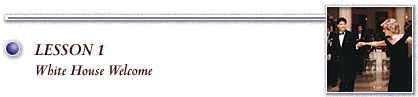

|
As America’s head of state, the president of the United States welcomes guests from across the country and around the world to the "people’s house." For many foreign leaders, the White House is their introduction to the United States, and the experience these visitors have at the President’s House may be critical to establishing relations between governments. This was especially true in the 19th century, when rules of protocol were strict. Therefore, White House ceremonial events are a mix of the personal and political. Guests must enjoy themselves, while feeling respected and honored in the home of the president, and - if all goes well - depart with a positive view of America and Americans. World leaders who visit may have very little exposure to our nation’s citizenry and so the president and the first family, in essence, represent all Americans. For his fellow citizens, a president’s invitation to the White House is special. A White House event is often a time for the president to honor his American guests — such as the winners of the Medal of Freedom or the Olympic athletes. Above all, the White House represents the cultural link of home. The president welcomes visitors to his home — whether they hail from the Far East or from just down Pennsylvania Avenue and the halls of Congress. But by extension, the president’s home is the people’s home. The people have allowed the president temporary occupancy, and they expect him to be the most gracious of hosts. Early Years George Washington conceived the role of the White House, as it was being built in the 1790s, as a place that would command respect at home and abroad. The young republic was an experiment in self-government and Washington believed that foreign diplomats, especially, needed to regard the United States as a formidable and permanent nation. Washington died before the completion of the White House. The second president, John Adams, was the first chief executive to occupy the structure then known as the "President’s House." John and Abigail Adams welcomed the public to the first New Year’s Day reception on January 1, 1801, a tradition that would last until the 1930s. The White House was unfinished when they moved in, and the room that was to be the largest and grandest space for parties and ceremonies - the East Room - was used by Mrs. Adams to dry her laundry. The People’s House In the first half of the 19th century, "Washington was the one and only American city where, on a few annual occasions, any properly dressed man and woman could enter its grandest and most famous house, walk through its elegantly furnished reception rooms, and sip lemonade or Madeira and eat cake and ice cream with distinguished personages. Fashionable hobnobbing made people feel good about themselves and optimistic about their country." [Barbara Carson, "Social Seasons and Rituals of Entertainment," in Our Changing White House, 56-57] The open houses held on New Year’s Day and the Fourth of July were important because they promoted the idea that the people had ready access to their leader, who was in fact the foremost public servant in the country. According to the author of A Description of the Etiquette at Washington City (1829), "At these levees any citizen of a fair character, and of suitable appearance for such a place, may . . . ultimately succeed in being introduced to any individual that attends the levees and parties at Washington . . . . Strangers not particularly distinguished are introduced to [the president] at his levees." [Carson, 71-72] This offended some Europeans, who were accustomed to a rigid societal hierarchy. The wife of the British prime minister during Jefferson’s administration (1801-1809) was shocked to find herself introduced to her tailor at one party, as if they were of the same social station. Jefferson’s response summed up his thoughts on the issue of who should be welcomed at the White House: "When brought together in society all are perfectly equal, whether foreign or domestic, titled or untitled, in or out of office." Depending on the president and first lady, and their personal preferences, the White House was more or less accessible to the public. Dolley Madison (James Madison, 1809-1817), an exuberant hostess, brought the waltz to the President’s House. Thomas Jefferson and James Monroe (1817-1825) preferred smaller dinners rather than well-attended evening receptions called levees or drawing rooms. In 1828-29, crowded White House events were relieved with the completion of the East Room. One of the wildest public occasions in White House history was the reception following the inauguration of Andrew Jackson in 1829, when thousands of well-wishers from all walks of life converged on the White House. They made themselves at home, sipping lemonade and eating ice cream. The scene became so overwhelming, Jackson spent the night at a nearby hotel. The first president to hail from the American frontier, Jackson enjoyed a popular appeal throughout his two terms in the White House. With expansion of government and those associated with it, coupled with the growth of the Washington population, public functions were curtailed, but New Year’s Day receptions and Fourth of July open houses were still held into the 20th century. In 1933, however, President Herbert Hoover cancelled the New Year’s Day open house after he shook hands with 6,000 guests. Until then it was the most democratic of the White House events. After World War II and during the Cold War, and especially in response to recent terrorist activities, access to the White House has become very restricted. Gone are the days one could wander over to the front door, knock, and receive a tour of the president’s home. This does not mean, of course, that Americans do not attend special activities and dinners. The house acts as a museum, as well, and more than one million visitors take public tours every year. Click here to take a virtual tour of the state rooms.
The State Visit While economic and political business may be at the core of the visit, the state visit is also a social occasion, with the president and first lady as official hosts of a nation. Foreign heads of state - kings, queens, presidents - and other important representatives from around the world are invited to share the home of their counterpart. Just before the Civil War, President James Buchanan (1857-1861) brought to the White House his experience as a minister to Russia and Great Britain, where he learned the courtly manners of Europe’s receptions. Buchanan was the only bachelor president, but protocol dictated that the White House must have a hostess, and so he turned to his niece, Harriet Lane. The first diplomatic visit from Imperial Japan in 1860 caused a stir, as the public gathered outside the White House to catch a glimpse of the entourage, numbering more than 60, and their exotic outfits. Later in the same year, Queen Victoria’s son Albert, Britain’s Prince of Wales, stayed at the White House. A Washington, D.C., newspaper reporter covered the public reception with the prince and captured the frenzy, as all ranks of society came to meet the man who would one day be crowned King of England: "The rush at the doors was terrible. People clambered in and jumped out of windows. Confusion reigned. The Royal party have certainly seen Democracy unshackled." The first ruling monarch came to the White House in 1874, when President Ulysses S. Grant welcomed King David Kalakaua of the Sandwich Islands (now Hawaii). British Prime Minister Winston Churchill was the guest of Franklin Roosevelt (1933-1945) on more than a few occasions, and during World War II the allies worked as often as they socialized. Today, the first lady and White House Social Office work with the Protocol Office of the State Department to plan state visits. In the first three years of his presidency, Bill Clinton hosted 12 state visits. Among the guests were France’s President Jacques Chirac, Ireland’s President Mary Robinson, and South Africa’s President Nelson Mandela. Objectives: By completing
this lesson and activities, students will:
|